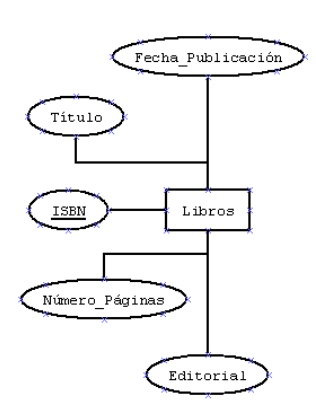
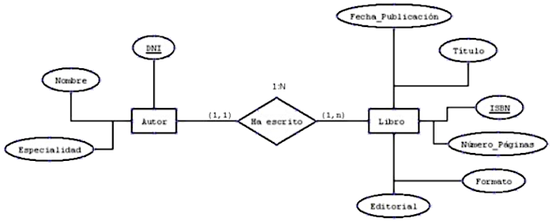
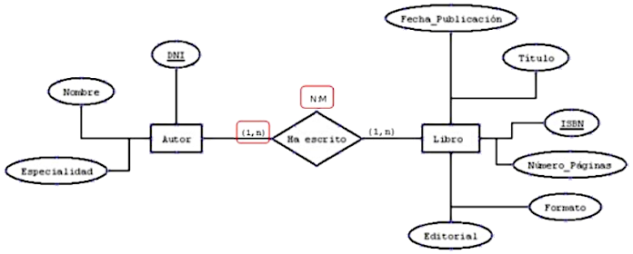
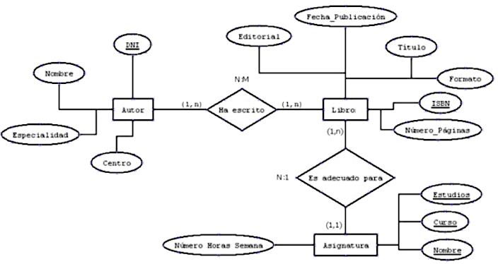
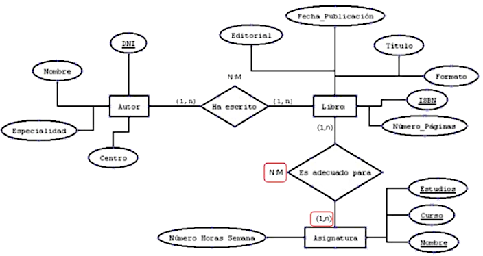
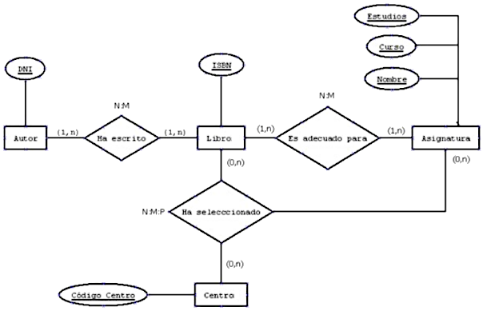
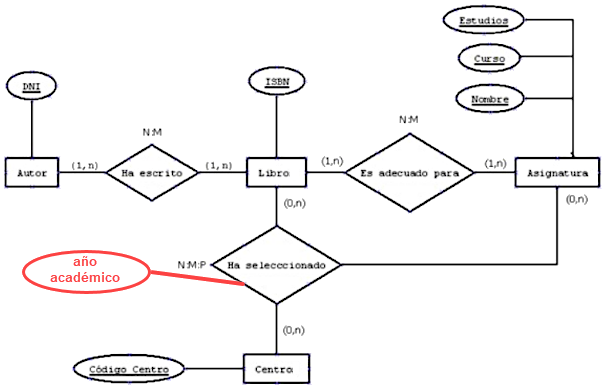
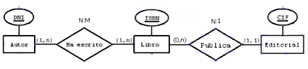
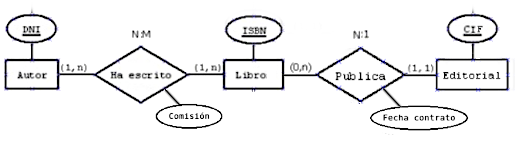

Actividades - Boletín A. Solución
Nota
Aunque a todos nos encanta eso de teclear y trastear con nuestro ordenador, para este apartado es aconsejable que todos tengáis cerca un papel y un bolígrafo para ir haciendo borradores hasta conseguir el modelo que nos parezca más adecuado.
También es muy importante, el tener en cuenta que cuando el modelo E-R tiene ya algo de complejidad, seguramente la solución no sea única. Sí que es posible que una pueda ser mejor que otra, pero esto es como programar; dos programas diferentes pueden resolver un mismo problema, uno puede ser más óptimo que otro, pero los dos funcionan.
Además, los modelos E-R dependen mucho de las condiciones que se consideren en el contexto, por ello siempre que las diferencias estén justificadas, dos soluciones distintas pueden ser completamente válidas.
Enunciados
Vamos a ir diseñando paso a paso una base de datos a partir de un enunciado que paulatinamente requerirá más necesidades, por lo que el diseño se irá complicando a medida que avancemos en los enunciados.
Enunciado 1
Supongamos que Javier Pintor escribe libros de Informática por afición. A Javier le gustaría poder almacenar la información de los libros que escribe y que publica por su cuenta cuando dispone de algo de dinero.
Enunciado 1. Posible solición
Lo primero que haremos es buscar las entidades. Podríamos pensar en “Autores” y en “Libros”. Sin embargo, ¿cuántos autores vamos a guardar? Solamente tendría una ocurrencia: los datos de Javier.
¿Merece la pena guardarlo en este caso? Seguramente no, pues es él mismo quien lo va a manejar y él ya se conoce a sí mismo, no necesita guardar información sobre él. ¿Se necesita la entidad “Libros”? Por supuesto que sí, puesto que es donde va a guardar la información de los libros que escribe.
En segundo lugar buscamos las relaciones. En este caso solo tenemos una entidad y no parece que existan relaciones reflexivas para ella, luego en este caso no tenemos relaciones y, por lo tanto, no tenemos que buscar ni participación ni cardinalidad.
En tercer lugar, buscamos los atributos de la entidad. Como el enunciado no especifica nada en especial, colocaremos los más habituales para esta entidad. No obstante, esta información habría que cotejarla con Javier, por si quiere añadir algo más o eliminar alguno que no le interese. Algunos de estos atributos pueden ser: ISBN, Título, Número_Páginas, Fecha_Publicación, Editorial.
Por último, especificamos el dominio para cada uno de ellos, indicando su tamaño de forma aproximada (posteriormente habría que verificarlo con ejemplos reales para no quedarnos cortos en el número máximo de caracteres de cada campo).
- ISBN será una cadena de caracteres de tamaño 20.
- Título será una cadena de caracteres de tamaño 50.
- Número_Páginas será un número entero.
- Fecha_Publicación será un dato de tipo fecha.
- Editorial será una cadena de caracteres de tamaño 30.
Ahora vamos a ver el atributo clave. De todos los atributos, ¿cuál piensas que puede identificar de forma única cada uno de los libros?
Para un solo autor -como es el caso que nos ocupa- podríamos pensar que el “Título” puede ser un buen candidato, pues no parece lógico que publique dos libros con el mismo título. Sin embargo, ¿qué ocurre si revisa el libro tres años después y hace una nueva reedición? No podría poner el mismo título, tendría que cambiarlo, pues la clave principal no se puede repetir.
Por ello, el ISBN es el campo clave principal, ya que es un conjunto de caracteres que te asignan cuando publicas un libro y es único para cada libro. Si el libro fuese reeditado obtendría un nuevo ISBN al publicarlo, con lo cual no habría problema.

Enunciado 2
Javier Pintor ha estado comentando con sus compañeros del centro de Secundaria donde imparte clases, que se ha creado una base de datos con los libros que ha escrito. Otros profesores le comentan que también han escrito libros para las asignaturas que imparten y que los han publicado por su cuenta, unas veces en papel y otras en formato digital. Por ello, Javier ha decidido modificar su base de datos para que aparezcan también los libros de sus compañeros y así poder publicar en su servidor Web los autores y los libros de cada uno.
Enunciado 2. Posible solución
Se ha modificado el contexto de nuestro problema y con ello también se verá modificado nuestro modelo E-R. Realizamos el mismo proceso que en el ejercicio anterior.
Primero buscamos las entidades. Ahora sí que nos interesará disponer de la entidad “Autor”, ya que hay varios autores que se van a almacenar en esa entidad (va a tener varias ocurrencias) y, por otro lado, también necesitamos la entidad “Libro” para guardar la información de los libros publicados.
Buscamos las relaciones. La relación será entre la entidad “Autor” y la entidad “Libro” y la podemos llamar “Ha escrito”.
Buscamos la participación de esta relación. Un “Autor” Ha escrito uno (si no, no sería autor) o varios “Libros”, luego sería (1,n). Por otro lado, un “Libro” siempre Ha sido escrito por 1 “Autor” y como mucho por 1 solo, pues el enunciado no plantea que un “Libro” pueda haber sido escrito por varios compañeros a la vez (en caso de duda habría que preguntar al cliente o confirmarlo viendo las ocurrencias físicas de los “Libros”), luego sería (1,1). Por tanto, la cardinalidad (el máximo de cada participación) sería 1:N.
Seguidamente buscamos los atributos de cada entidad.
Autor. Algunos de los atributos de la entidad “Autor” pueden ser: DNI, Nombre, Especialidad. Especificamos el dominio para cada uno de estos atributos:
- DNI será una cadena de caracteres de tamaño 10.
- Nombre será una cadena de caracteres de tamaño 50.
- Especialidad será una cadena de caracteres de tamaño 50.
Como clave de la entidad “Autor” utilizaremos el campo DNI, que es único para cada una de las ocurrencias de la entidad.
Libro. Algunos de los atributos de la entidad “Libro” pueden ser: ISBN, Título, Número_Páginas, Fecha_Publicación, Editorial, Formato.
Por último especificamos el dominio para cada uno de ellos, indicando su tamaño de forma aproximada (posteriormente habría que verificarlo con ejemplos reales para no quedarnos cortos en en número máximo de caracteres de cada campo).
- ISBN será una cadena de caracteres de tamaño 20.
- Título será una cadena de caracteres de tamaño 50.
- Número_Páginas será un número entero.
- Fecha_Publicación será un dato de tipo fecha.
- Editorial será una cadena de caracteres de tamaño 30.
- Formato será una cadena de caracteres de tamaño 20.
- La clave principal de la entidad “Libro” será ISBN.
Por coherencia, escribiremos todas las entidades en singular “Asignatura”, “Libro", etc., o todas en plural. Es indiferente cualquiera de las dos opciones siempre que se aplique el mismo criterio a TODAS las entidades de un mismo diagrama.

Enunciado 3
Javier y sus compañeros se han dado cuenta de que con los libros que tienen publicados aún hay varias asignaturas para las que no tienen un libro de texto elaborado por alguno de ellos. Han pensado en crear esos libros para tener cubierta toda la gama de asignaturas que ellos imparten. Sin embargo, con la experiencia que tienen saben que el tiempo medio que tarda un autor en escribir un libro de texto es de un par de años, por ello han decidido dividirse el trabajo y en cada uno de los libros que faltan van a trabajar varios autores para terminarlos en el menor tiempo posible.
El modelo que tenemos del ejemplo anterior, ¿sirve para este nuevo contexto? Si hubiese que cambiar algo, ¿qué sería?
Enunciado 3. Posible solución
A la primera pregunta tenemos que responder que no sirve el mismo modelo del ejemplo anterior, pues una de las condiciones que presentaba ese modelo es que cada libro era escrito por un solo autor. Sin embargo, se plantea la posibilidad de que un mismo libro pueda estar escrito por varios autores, luego participación y cardinalidad van a cambiar.
A la segunda pregunta (ya parcialmente contestada en la anterior) hay que decir que cambia la participación entre la correspondencia Libros que han sido escritos por Autor. En este caso, un Libro habrá sido escrito como mínimo por un autor, pero como máximo por varios, por lo que pasaría a ser (1,n). Por tanto, la cardinalidad también variará y tendremos una N:M.

Enunciado 4
Varios profesores de otros centros han visto la página web del centro de Javier y los libros incluidos, y les ha gustado mucho la iniciativa, queriendo incluir sus obras (de otros centros) en la base de datos. Por otro lado, Javier y los demás autores de publicaciones, se han dado cuenta de que puede haber varios textos para una misma asignatura y se desea reflejar de alguna forma qué obras pueden servir para cada una de las asignaturas que se imparten en el centro, de manera que todo libro es adecuado para una única asignatura.
Atención
El enunciado habla de libros, publicaciones, obras y textos. Si te fijas, se refieren a la misma entidad. Esto te pasará con frecuencia y tienes estar atento para no crear nuevas entidades.
Enunciado 4. Posible solución
Nota
A partir de ahora nos ahorraremos (para no escribir tanto) los dominios de los atributos. Más adelante se trabajará con ello más a fondo.
Este nuevo contexto abre un gran abanico de posibilidades, aunque vamos a realizar el más sencillo. Se podrían incluir más entidades y relaciones que ahora no van a resultar muy productivas, por ello no se incluyen y pasan a ser atributos de otra relación. Por ejemplo, “Centro” al que pertenece el autor, “Curso” en el que se imparte una asignatura determinada, etc.
Inicialmente, las entidades con las que vamos a trabajar serán las que ya teníamos, “Autor” y “Libro” y una nueva que son las asignaturas. Por coherencia, la escribiremos en singular: “Asignatura”, aunque podíamos haberlas puesto todas en plural.
Las relaciones que vamos a tener son las que ya teníamos entre “Autor” y “Libro” (Ha escrito) y una nueva entre “Libro” y “Asignatura” (“Es adecuado para”) que nos permitirá establecer una correspondencia entre los libros almacenados en nuestra BD y las asignaturas para las que son adecuados.
Nos colocamos en “Libro” y miramos hacia “Asignatura”. Buscamos la participación y la cardinalidad. Un “Libro” “es adecuado para” una “Asignatura” (1,1) y, tal como dice el enunciado, vamos a encontrar que para una “Asignatura” puede haber varios “libros” adecuados, luego tendremos una participación (1,n). Tomando el mayor de cada par obtendremos la cardinalidad N:1 tal como se muestra en la figura.
Buscamos los atributos (podríamos incluir alguno más si lo consideramos necesario).
- Entidad Autor. Añadimos el atributo “Centro”.
- Entidad Libros. No hay cambios.
- Entidad Asignaturas. Estudios, Curso, Nombre, Número_Horas_Semana. Vemos más adelante cuál será la clave primaria.
Con el atributo “Estudios” nos referimos a si se trata de estudios de ESO, BACHILLERATO CIENCIAS, BACHILLERATO SOCIALES, CFGS ASIR, CFGS DAM, CFGS DAW, CFGM SMR, etc. Con “Curso”, a si es primero, segundo, tercero, cuarto (para la ESO) y el “Nombre” es el nombre de la asignatura.
Ahora tenemos que buscar la clave principal. Podríamos pensar que la más adecuada es “Nombre”, sin embargo, puede ocurrir que la asignatura de Matemáticas se llame igual para cualquier curso de la ESO y para los cursos de Bachillerato, luego como no es único no puede ser la clave principal. ¿Qué otras opciones tenemos?
El atributo “Estudios” no puede ser la clave principal, pues la ESO tiene numerosas asignaturas, luego no sería único para cada ocurrencia. El atributo “Curso” tampoco puede ser la clave principal, pues tendremos muchas asignaturas de primero y además habrá primero de ESO, de CFGS DAM, etc. El atributo “Número_Horas_Semana”, tampoco puede ser la clave principal, pues puede haber varias asignaturas que tengan el mismo número de horas a la semana.
Por tanto, estamos comprobando que por sí solos ninguno de los atributos puede ser clave principal. En ese caso, tendremos que intentar una clave principal compuesta; es decir, formada por la combinación de varios atributos.
Si utilizamos “Estudios” junto a “Curso” podríamos tener para ESO: ESO - Primero, ESO - Segundo, etc., pero en cada uno de esos cursos habrá múltiples asignaturas, luego no es válido pues no identifica de forma unívoca a cada una de las ocurrencias de la entidad.
Si utilizamos Estudios junto a “Nombre” podríamos tener: ESO - Matemáticas, ESO - Lengua, ESO -Inglés, pero lo normal es que tanto Matemáticas como Lengua como Inglés lo tengamos en los cuatro cursos de la ESO, luego tampoco identificará de forma única cada ocurrencia.
La otra alternativa es utilizar “Curso” junto a “Nombre”. En este caso tendríamos: Primero - Matemáticas, Primero - Inglés, etc. Sin embargo, ¿que ocurriría con el Inglés de primero de la ESO, con el Inglés de Primero de Bachillerato de Ciencias y con el Inglés de primero de DAM? Tampoco nos sirve para identificar de forma única cada ocurrencia.
Sin embargo, la clave principal es necesaria, luego tenemos que buscarla uniendo más campos. En este caso “Estudios”, “Curso” y “Nombre”. Podremos observar que solamente habrá un ESO - Primero - Inglés o un CFGS DAM - Primero - Inglés o un Bachillerato Ciencias - Primero - Inglés.
Cada “Asignatura” queda identificada de forma única por la unión de estos tres atributos. Por tanto, esta será nuestra clave principal: Estudios + Curso + Nombre.

Enunciado 5
Después de haber elaborado el modelo anterior, al revisarlo nos hemos dado cuenta de que hay libros que pueden servir para varias asignaturas, como el de Inglés, que puede servir para la asignatura de Inglés de Primero de DAM, la de primero de DAW y la de primero de ASIR.
¿El modelo propuesto en la imagen anterior contempla esta posibilidad? ¿Qué habría que cambiar?
Enunciado 5. Posible solución
Esa posibilidad no está contemplada, pues la participación entre “Libro”, “Es adecuado para” y “Asignatura” es (1,1). Es decir, un libro solo puede servir para una asignatura y en la revisión hemos encontrado que puede ocurrir que un mismo libro pueda servir para varias asignaturas. Sería, por tanto, una participación (1,n) y también cambiaría la cardinalidad de la relación a N:M.

Enunciado 6
Todos los profesores que participan en las publicaciones recogidas en la base de datos se han sorprendido de la buena calidad de los materiales elaborados y han decidido que sería una buena idea enviar información a todos los centros de la comunidad autónoma por si desean emplearlos para sus clases. Por ello, Javier va a modificar el modelo elaborado hasta ahora para reflejar en él aquellos centros que han seleccionado alguno de los libros de la base de datos para impartir alguna de sus asignaturas en un determinado año académico.
Modifica el modelo de Javier para reflejar este nuevo contexto.
Enunciado 6. Posible solución
Nota
A partir de ahora nos ahorraremos también (por simplificar los gráficos) dibujar los atributos en el modelo E-R, aunque sí los documentaremos al realizar el modelo. Esto es muy común en ámbitos académicos y en las fases preliminares del modelado en ámbitos profesionales.
Inicialmente las entidades con las que vamos a trabajar serán las que ya teníamos, “Autor”, “Libro”, “Asignatura” y otra que aparece en el nuevo contexto “Centro”.
Las relaciones que vamos a tener son la que ya teníamos entre “Autor” y “Libro” (“Ha escrito”) y entre “Libro” y “Asignatura” (“Es adecuado para”). Además, aparece una nueva relación "Ha seleccionado" que indicará que un “Centro” ha seleccionado un determinado “Libro” para una “Asignatura”.
Buscamos la participación de esta última relación de grado 3 pues relaciona "Libro", "Asignatura" y "Centro".
- Para una "Asignatura" y "Centro" concretos puede haber varios libros o ninguno. Libro:(0,n).
- Un "Centro" puede haber selecionado un "Libro" para varias asignaturas o no seleccionarlo. Asignatura:(0,n).
- Un "Libro" puede ser seleccionado para una "Asignatura" en varios centros o en ninguno. Centro:(0,n).
La cardinalidad será el mayor de cada par quedando N:M:P.
Buscamos los atributos:
- Entidad “Autor”: DNI, Nombre, Especialidad, Centro => Clave principal: DNI.
- Entidad “Libro”: ISBN, Título, Número_Páginas, Fecha_Publicación, Editorial, Formato => Clave principal: ISBN
- Entidad “Asignatura”: Estudios, Curso, Nombre, Número_Horas_Semana => Clave principal: Estudios + Curso + Nombre
- Entidad “Centro”: Código_Centro, Nombre, Localidad, Teléfono, Correo => Clave principal: Código_Centro.

¿Falta algo?
Sí, el enunciado indica que los centros seleccionan un “Libro” para una “Asignatura” para un determinado año académico, por ejemplo Curso 2023 - 2024, y eso no aparece reflejado en nuestro modelo de datos. ¿Dónde crees que debería ir?
No es un atributo del “Centro”, pero tampoco es un atributo de la “Asignatura”, ni tampoco de los Libros. Es un atributo que aparece cuando un “Libro” ha sido Seleccionado para una “Asignatura” por un “Centro”; es decir, es un atributo de la relación, luego debería ir en la relación “Ha seleccionado”.
- Atributos de la relación “Ha seleccionado”: Año_Académico.

Enunciado 7
La iniciativa de Javier y sus compañeros ha tenido una aceptación estupenda y muchas editoriales han dejado de vender sus libros porque los centros han elegido los libros ofrecidos por este conjunto de profesores. En vista de esto, varias editoriales, después de examinar los materiales elaborados han decidido hacer una oferta a los profesores por los materiales publicados tanto en formato digital como en formato impreso. El proyecto se ha reconvertido completamente y ahora tenemos que los autores de los libros han sido contratados por varias editoriales para la publicación de sus libros. Cada libro tiene un contrato con sus autores y es en exclusiva con una sola editorial.
Javier y sus compañeros ya no podrán ofrecer directamente sus materiales a los centros, pues cada editorial tiene sus canales de distribución, pero sí que están interesados en que en su Web aparezcan los libros que han publicado, las editoriales que los han publicado, los autores y los precios de venta de cada uno de los materiales.
Elabora el Modelo E-R en este nuevo contexto.
Enunciado 7. Posible solución
Primero buscamos la entidades que formarán nuestro modelo E-R. En este caso encontramos la entidad “Autores” (recuerda que hay libros que han sido escritos por varios autores), “Libros” y “Editoriales”.
Después buscamos las relaciones. Podemos encontrar la relación "Ha sido escrito por" entre “Autores” y “Libros”. También podemos encontrar otra relación "Publica" entre Editoriales y Libro.
¿Y la relación para el contrato entre editoriales y autores?
Podríamos pensar en otra relación directa entre estas 2 entidades, pero los contratos implican un libro concreto en exclusiva con una editorial, por lo que esta información corresponde a la relación "Publica", y como los libros ya tienen otra relación con los autores, si existe información del contrato exclusiva que varíe entre los autores de un mismo libro, se puede expresar en la relación "Ha escrito". Lo vemos después con un ejemplo.
También se podría pensar en una relación de grado 3 entre las 3 entidades. Esta sería funcional y podría expresar en una relación toda la información, pero tiene un gran inconveniente: No puede asegurar que los contratos de cada libro sean exclusivos con una editorial. Al existir libros con varios autores, la relación ternaria tiene una ocurrencia por cada una de las parejas "Autor-Libro" del mismo libro, y todas ellas por obligación tienen que estar relacionadas con la misma "Editorial" ya que es el mismo libro, y eso es una restricción extra en la ternaria que afecta en exclusiva a 2 entidades "Editorial" y Libro", y es independiente de la tercera. Por tanto, es un componente de grado 2 y se expresa mejor con una relación de este grado.
Para entender rápidamente el problema de la relación de grado 3, supongamos un libro con 2 autores y mostremos las ocurrencias:
- Autor1-Libro1-Editorial1
- Autor2-Libro1-Editorial... ¿1?¿Quién nos obliga a ello?
En una relación ternaria, aunque por cada pareja "Autor-Libro" se proponga una participación máxima 1 en "Editorial", eso solo significa que cada autor puede publicar cada libro en una sola editorial, pero nada obliga a que el mismo libro se relacione solo con una editorial, se puede variar por cada autor que tenga. Con esto se podrían introducir errores en el sistema y, por este motivo, no es un diseño robusto.
En consecuencia, vamos a calcular la participación y cardinalidad de la relación "Publica", puesto que "Ha escrito" se comporta igual que en los casos anteriores.
- Un "Libro" puede ser publicado por una "Editorial" y nunca por más de una. Queda a nuestro criterio decidir si la base de datos registra libros que aún no han sido publicados, en cuyo caso la participación sería (0,1), o si solo se registran los libros que han sido publicados, en cuyo caso la participación sería (1,1). Por comodidad, vamos a usar la menos restrictiva (0,1).
- Una "Editorial" puede publicar varios "Libros" o ninguno (0,n). Aquí también se podría optar por una participación (1,n), ignorando en nuestra BD editoriales que no han publicado ningún libro de nuestros autores, pero las participaciones mínimas 1 son más restrictivas y es preferible no añadirlas si no es necesario. Por tanto, la cardinalidad de la relación "Publica" será 1:N.

El siguiente paso será buscar los atributos de nuestras entidades y relaciones.
- Entidad Autores: DNI, Nombre, Especialidad, Centro → Clave principal: DNI
- Entidad Libros: ISBN, Título, Número_Páginas, Formato → Clave principal: ISBN
- Entidad Editorial: CIF, Nombre, Teléfono, Correo → Clave principal: CIF
Otra cosa más, si queremos guardar información sobre la fecha del contrato de publicación y el porcentaje de comisión que se llevará cada autor por la venta de un ejemplar de un libro ¿dónde guardaremos esa información?
La fecha del contrato de publicación es única para cada libro, por lo que puede ir en la entidad "Libro". También se puede considerar que, como corresponde a la publicación del libro, debe ir en la relación "Publica", lo que es más correcto desde un punto de vista conceptual. En la próxima unidad veremos que al final ambas opciones son válidas y se resuelven de forma similar.
El porcentaje de comisión es único para cada autor y libro, no siendo necesariamente el mismo para todos los autores del mismo libro. Por tanto, debe ir en la relación "Ha escrito". Situarlo en "Publica", lo que a primera vista pudiera parecer más lógico, obligaría a que todos los autores de un libro tuviesen la misma comisión.
